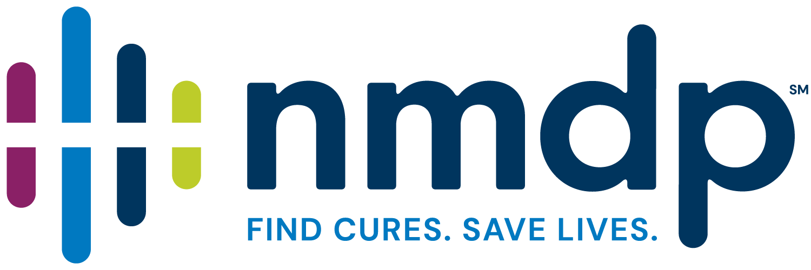
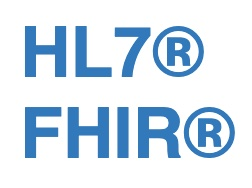

This page summarizes HL7 FHIR activities, tools, and endpoints available at NMDP & CIBMTR. These include locally developed FHIR Implementation Guides (IGs), terminologies (code systems, value sets, identifiers), and applications.
MatchSync
Implementation
Guide
Latest version: 0.1.3
FHIR IG that describes MatchSync profiles
HLA Reporting
Implementation
Guide
Latest version: 0.1.0
FHIR IG for reporting HLA. This is based on the Genomics Reporting IG developed by the HL7 Clinical Genomics workgroup.
CIBMTR Reporting
Implementation
Guide
Latest version: 0.1.12
FHIR IG that describes profiles, value sets, and guidance for reporting transplant data to CIBMTR.
MatchSync Donor
Implementation
Guide
Latest version: 0.1.0
In development
Terms of Use
and Privacy
Policy
Latest version: Current
The terms of use covers the above main areas
Terms of Use